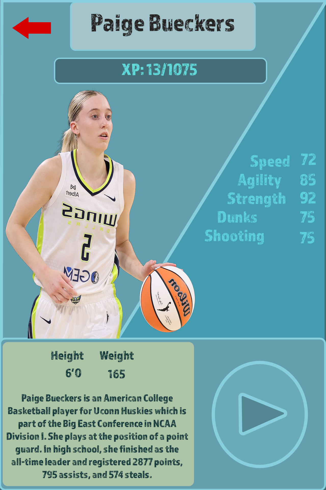

01 / Problem
Fit several kinds of information into one view.
A player profile can become hard to scan when identity, progress, statistics, biography, and actions compete for attention.
Profile / Stats / Information hierarchy
A visual interface study for presenting player identity, progression, performance statistics, and supporting context in one portrait layout.

The design at a glance
The composition gives the player image and name the strongest visual weight, then moves through progression, performance stats, physical details, biography, and a play action.
This case study is a retrospective analysis of the supplied design. It does not claim formal usability testing or measured outcomes.
01 / Problem
A player profile can become hard to scan when identity, progress, statistics, biography, and actions compete for attention.
02 / Design intent
Use a large character image and clear name treatment to establish identity, then place numerical information in predictable groups.
03 / Key decisions
04 / Interaction & usability
The layout distinguishes navigation, content, and action zones. A production version would need clear focus, pressed, loading, and disabled states, plus stronger labels for icon-only actions.
05 / Tools & skills
UI composition, player-card design, visual hierarchy, typography, image treatment, information grouping, and interaction affordances.
06 / What I’d improve next
I would extend this into states for loading, unavailable stats, comparison, video playback, and keyboard or controller navigation while preserving the same information hierarchy.
Next level / Let’s work together